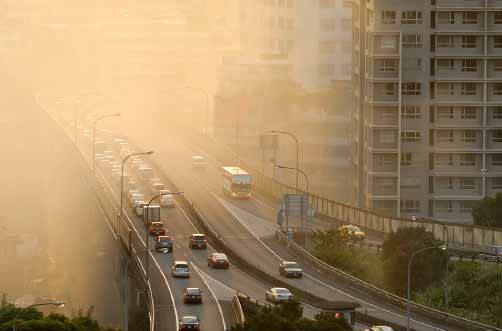
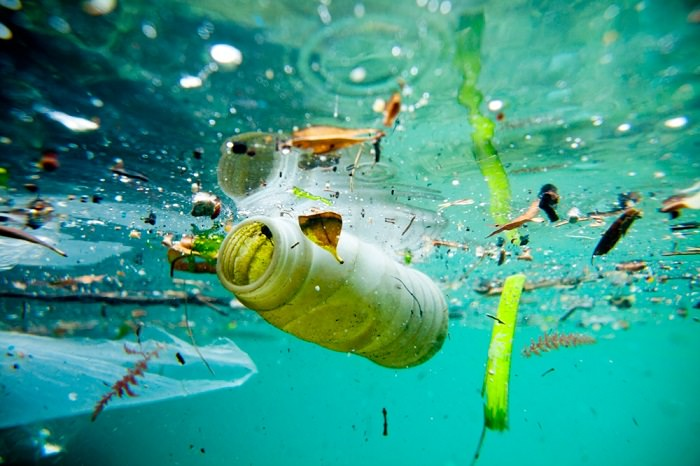
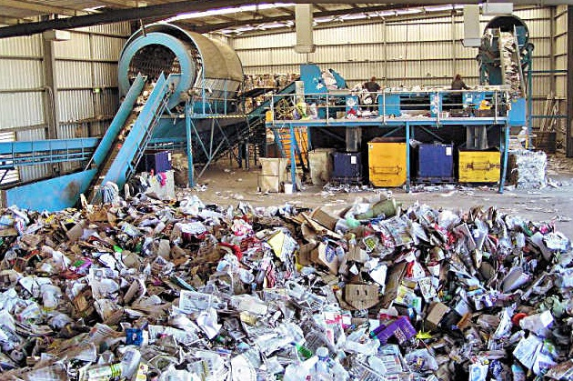
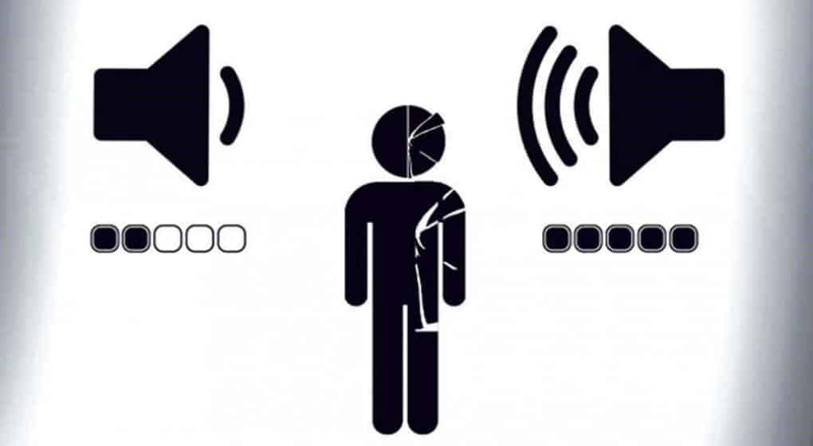
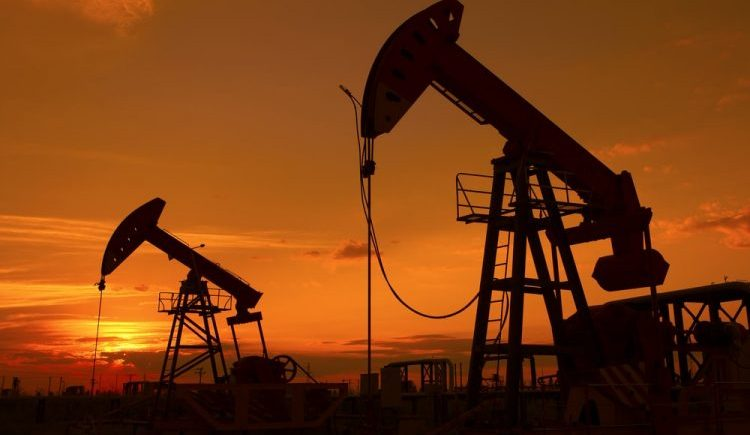
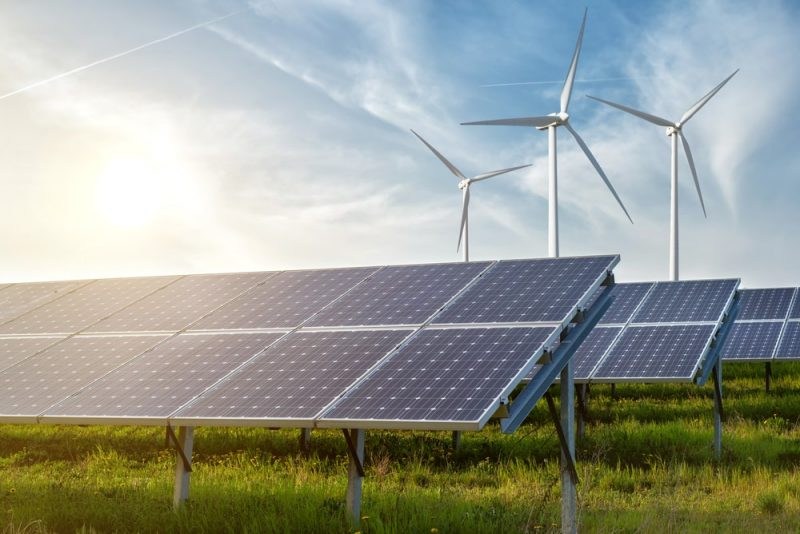

Diariamente ocurren acontecimientos que afectan a la salud del planeta: Como accidentes en refinerias petroliferas que ocassionan derrames de petroleo en el mar, la contaminacion de rios, suelos y la atmosfera desde el incio de la Revolucion industrial, Lluvias acidas, la degradacion de la capa de Ozono, la escasez de agua y de los recursos naturales, el incremento evidente del efecto invernadero gracias a los gases presentes en la atmosfera, la manifestacion constante y fuerte de recursos naturales que afectan directamente a la vida del planeta y las nuevas enfermedades que azotan al mundo.
Es necesario reflexionar acerca de lo que es necesario hacer ante esta problematica mundial, y sobre todo, como podemos contribuir de forma infividual al cambio para enfrentar dichos problemas de manera objetiva, critica y con soluciones sustentables
CONTAMINACION AMBIENTAL
| La contaminacion ambiental ocasiona daños directos a la salud de los seres expuestos a ella... |
|
|---|---|
|  | La inversión térmica es una derivación del cambio normal de las propiedades de la atmósfera con el aumento de la altitud |
|  | A lo largo de los años la basura se ha desechado en casi cualquier lado, pero, ¿Cual sera el efecto de que dichos desechos se desechen en las aguas? |
|  | La generacion de basura se encuentra en una escala alarmante, por lo que la importancia de manejar estos desechos es indispensable para conservar limpio nuestro planeta |
|  | Contaminacion Visual y auditiva Pocas personas no toman en cuenta estas dos clases de contaminantes, pero los efectos que traen consigo la exposicion prolongada a esta contaminacion ocasiona daños irreversibles a la salud |
RECURSOS NATURALES
|
A pesar de tener la posibilidad de renovarlos, estamos sobreexplotandolos llevandolos al borde de la extincion. |
|
|  |
El uso inmedido de estos recursos ocasionara que dentro un par de decadas algunos recursos ejemplares de los No renovables terminen por desaparecer |
|  |
Las energias que prometen un desarrollo sustentable en la humanidad |